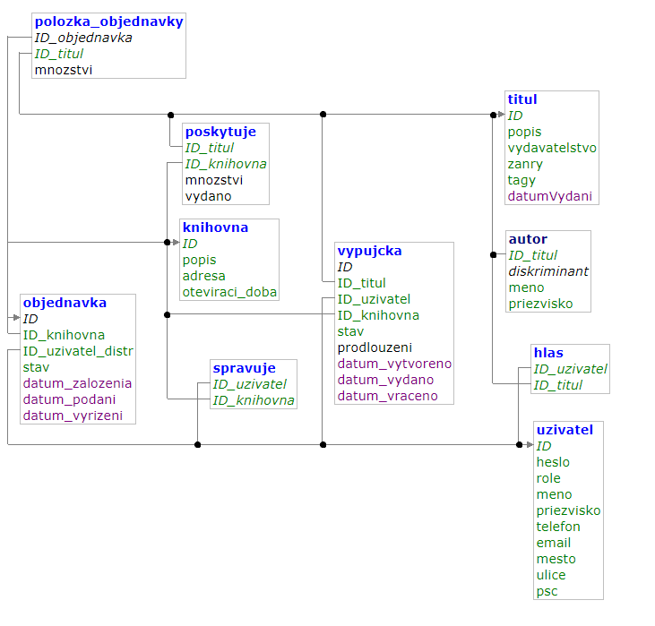

Knihovna
- Autoøi
- Jakub Komárek xkomar33@stud.fit.vutbr.cz - backend, nasazení systému
- Druhé jméno xautor02@stud.fit.vutbr.cz - implementace databáze, frontend
- Tøetí jméno xautor03@stud.fit.vutbr.cz - návrh databáze, výpomoc pøi frontendu, testování
- URL aplikace
- http://www.komarnet.cz/www/
U¾ivatelé systému pro testování
Uveïte prosím existující zástupce v¹ech rolí u¾ivatelù.
| Login | Heslo | Role |
|---|
| admin | *mBgD6@9&e2^4 | Administrátor |
| knihovnik1 | JkWM%9^AP8#8% | Knihovník |
| distributor | *VT%9j8sXzAJh | Distributor |
| user1 | Jh#4&4R94B77v | U¾ivatel |
Implementace
Databáze

Instalace
- postup instalace na server:
- Pøekopírovat obsah adresáøe do /var/www/ (umístìní pro apache2 - mù¾e se na va¹í stanici li¹it).
- V souboru app/config/local.neon zeditovat pøihlá¹ovací údaje k databázy.
- Správnì nakonfigurovat Apache2. Na hostigu ovykle není poteøeba
- softwarové po¾adavky:
- PHP > 7.3.X
- Apache2 > 2.2.X
- Mysq > 8.X.X
- Ubuntu > 18.X èi jiný linux
- konfigurace databáze:
- Pøihlásit se do databáze - Adminer, Php my admin
- Provést import ze souboru sql/iisDatabase.sql